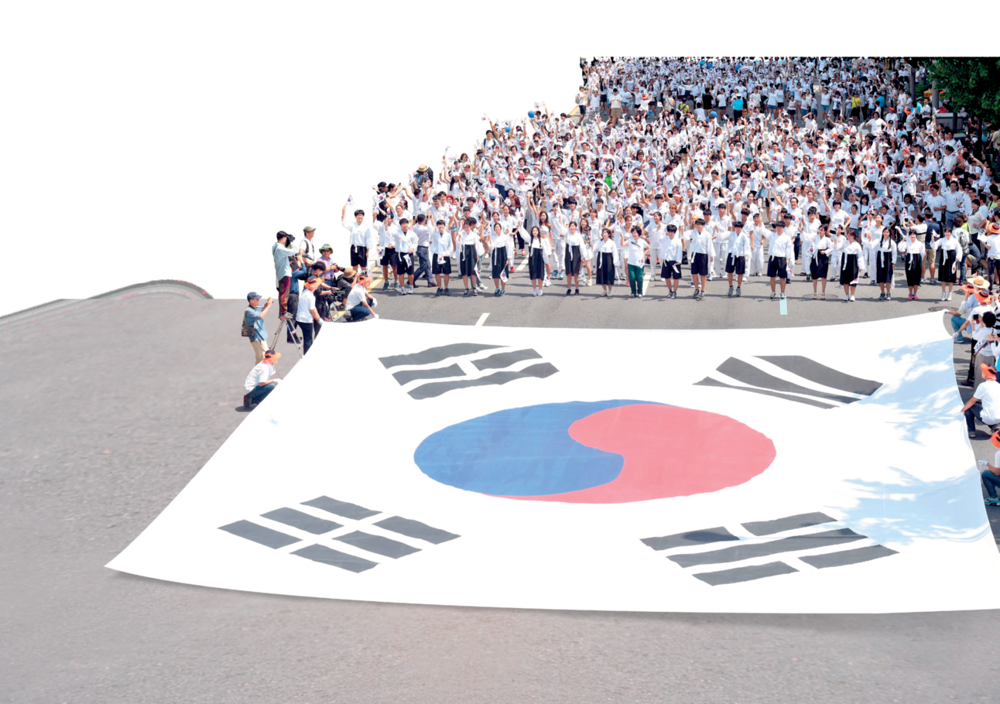
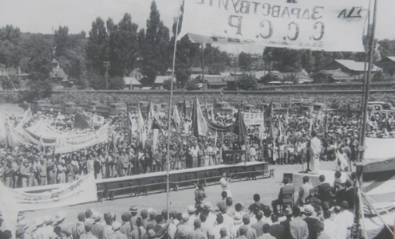
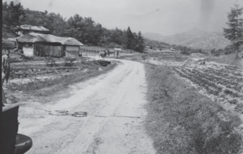
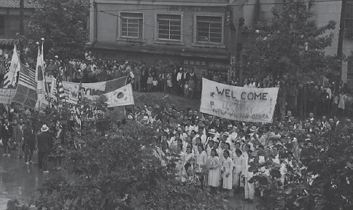
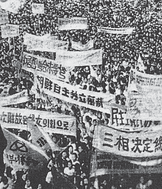
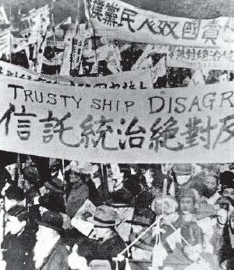
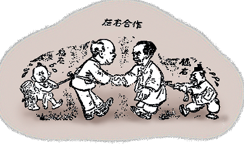
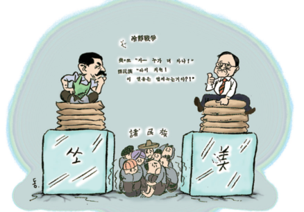
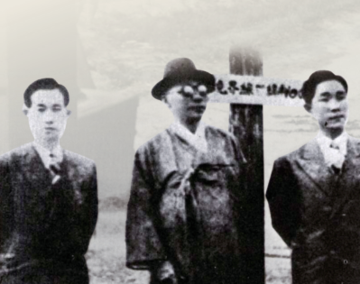

IV. 대한민국의 발전
8·15 광복과
통일 정부 수립을 위한 노력
— 분단과 통일의 갈림길에서 —
학습 목표
이 단원에서 배울 것
01
8·15 광복 이후 통일 정부 수립을 위한 노력과 미·소 양군의 주둔 과정을 설명할 수 있다.
02
모스크바 3국 외상 회의의 결정을 둘러싼 갈등과 좌우 대립을 극복하기 위한 노력을 말할 수 있다.
03
냉전이 동아시아와 한반도에 끼친 영향, 분단의 위기 속 통일 정부 수립 노력을 발표할 수 있다.
KEY TERMS
이 단원의 주요 용어
8·15 광복
조선 건국 준비 위원회
38도선 분할
모스크바 3국 외상 회의
미·소 공동 위원회
좌우 합작 운동
냉전
남북 협상
제주 4·3 사건
PART 1
8·15 광복과
미·소 양군의 진주
1945.8.15
일왕의 항복, 한국은 일제의 식민 지배에서 벗어나다
연합국의 승리 + 끊임없이 독립운동을 벌였던 한국 민족의 쟁취

8·15 광복을 기뻐하는 독립투사와 시민들 (1945)
조선 건국 준비 위원회
여
여운형
1886~1947
조선 건국 동맹 바탕
독립 국가 건설 준비
안
안재홍
1891~1965
여운형과 함께
건준 공동 결성
광복 당일, 조선 총독부로부터 치안 유지 위임
건준의 활동
전국으로 퍼진 건국 준비
01
전국 지부 설치
각 지역에 지부를 두고 치안 유지와 행정 업무 담당
02
정치 세력 규합
친일파를 제외한 국내외 다양한 정치 세력을 망라
03
자주 독립 국가 건설
한국인의 힘으로 독립 국가를 세우겠다는 자신감
건준 → 조선 인민 공화국
조선 건국 준비 위원회
1945.8.15
여운형·안재홍 결성
→
조선 인민 공화국
1945.9.6
미군 진주 앞두고 수립 선포
→
이승만을 주석에 추대, 좌우 세력 망라 → 그러나 일부 민족주의 세력 이탈
1945년 말
정당 결성과 지도자 귀국
해외 귀국
이승만 · 김구
이승만 10월, 김구 11월 귀국
공통 지향
통일 정부 수립
1945년 말까지는 좌우 망라 지향
38°N
한반도는 미·소 양국의 세력 분할 지점이 되었다
미국이 제안, 소련이 동의 — 일본군 항복 접수를 명분으로
남과 북에 주둔한 미군·소련군
북 — 소련군
- 1945년 8월 말 평양 진주
- 행정권을 인민 위원회에 이양
- 통치 전면에 나서지 않고 간접적 영향력 행사
- 김일성 중심 좌익 세력 지원
남 — 미군정
- 1945년 9월 초 서울 진주
- 직접 통치, 조선 인민 공화국·임시 정부 불인정
- 총독부 관료·경찰 유임
- 한국 민주당 등 우익 세력 활용

평양에 진주한 소련군을 환영하는 북한 주민들

부산에 진주한 미군을 환영하는 남한 주민들

한 마을 어귀에 그어진 남북의 경계선 38도선
광복 직후 한국인들은 미·소 양군을 해방군으로 인식하였다
사료 · 1945.9.15
남한은 불꽃이 튀면 즉각 폭발할 화약통… 일본인 관료의 해임은 여론상 바람직하나 당분간 어려울 것… 정치적으로 가장 고무적인 요소는 연로하고 교육받은 한국인 보수주의자들이다.
— 미 국무 장관에게 보낸 재한국 정치 고문 베닝호프의 보고
생각해 보자
미군정은 왜 친일 세력을
존속시켰을까?
급격한 변화보다 현상 유지 정책
좌익 확산을 막기 위해 보수 세력 활용
1945년, 광복의 격랑
8월
8월 말
9월
10월
11월
8·15 광복
건준 결성
소련군
평양 진주
미군 서울 진주
인민 공화국 선포
이승만 귀국
김구 귀국
1945년 12월 모스크바
미·영·소 외무 장관들이 모이다
→ 한반도 점령 당사국이 결정을 내렸다
모스크바 3국 외상 회의 결정
STEP 1
미·소 공동 위원회 설치
한반도 점령 당사국이 조직
STEP 2
조선 임시 정부 수립
한국인으로 구성, 민주적 정당·사회단체와 협의
STEP 3
신탁 통치 (최장 5년)
4대국(미·소·영·중)이 공동 관리
STEP 4
독립 국가 수립
신탁 통치 종료 후 완전한 독립
사료 · 1945.12.26
조선을 독립 국가로 재건하고 민주주의적으로 발전시키기 위하여 임시 조선 민주주의 정부를 수립한다. … 미·소 공동 위원회는 조선 임시 정부와 협의하여 최고 5년의 신탁 통치 방안을 마련한다.
— 모스크바 3국 외상 회의 결정
공식 발표도 전에 퍼진 오보
"미국은 즉시 독립,
소련은 신탁 통치를 주장"
『동아일보』(1945.12.27)의 잘못된 보도
→ 신탁 통치 문제를 둘러싼 좌우 갈등이 극도로 격화
모스크바 결정에 대한 좌우의 입장
우익 — 반탁
- 김구·이승만 중심
- 신탁 통치 = 한국 독립 부인
- 과거 을사늑약·위임 통치안과 같다
- 신탁 통치 반대 운동 전개
좌익 — 찬탁(전환)
- 처음에는 반대
- 민주 개혁·임시 정부 수립 보장
- 5년 이내 독립 보장한다고 판단
- 결정 지지로 입장 전환
좌우 대립이 절충점을 찾지 못하고 극렬화

'삼상 결정 절대 지지' — 좌익 세력 시위

'신탁 통치 절대 반대' — 우익 세력 시위
미·소 공동 위원회, 두 번 열리다
1차
1946년 3월, 서울
소련: 모스크바 결정 지지 단체만 협의
미국: 모든 정치 세력 참여 보장
→ 결렬
2차
1947년 5월, 서울
입장 차이 좁히지 못함
제2차 미·소 공동 위원회도 결렬
→ 다시 결렬
미군정은 좌익 탄압 + 중도 세력 지원으로 전환
사료 · 1946.6.3 정읍 발언
이제 무기 휴회된 미·소 공동 위원회가 재개될 기색도 보이지 않으며, 통일 정부를 고대하나 여의케 되지 않으니, 우리는 남방만이라도 임시 정부, 혹은 위원회 같은 것을 조직하여 38도선 이북에서 소련이 철퇴하도록 세계 공론에 호소하여야 할 것이니…
— 이승만, 『서울신문』 1946.6.5.
중도 세력의 결단
좌우 합작 운동 (1946)
여
여운형
1886~1947
중도 좌파
좌우 합작 위원회 조직
김
김규식
1881~1950
중도 우파
남북 통합 임시 정부 지향
좌우 대립 극복 + 미·소 공동 위원회 재개 + 분단 저지
1946.10.7
좌우 합작 7원칙 (주요 4개)
1항
남북 통한 좌우 합작
모스크바 결정에 의거, 민주주의 임시 정부 수립
2항
미·소 공동 위원회 속개
공동 성명 발표로 요청
3항
토지 개혁
유상 매상 + 무상 분배 방식

'곤경에 처한 좌우 합작 운동' — 극좌·극우의 방해를 풍자한 만평 (1946.10.28)
좌우 합작 운동의 좌절
양측 비협조
좌우 양측 모두
적극 참여하지 않음
→
미군정 이탈
1947년 5월
제2차 미·소 공동 위원회 결렬
→
여운형 암살
1947년 7월
좌우 합작 운동 중단
1947년 3월
트루먼 독트린 — 냉전 본격화
미국 트루먼 대통령 — "사회주의의 확장을 저지하겠다"
총성 없는 전쟁, Cold War의 시작
두 진영으로 갈라진 세계
미국 · 자본주의
- 마셜 계획 — 서유럽 경제 원조
- 북대서양 조약 기구 (NATO)
- 일본을 반공 기지로, 재무장 추진
소련 · 사회주의
- 공산권 경제 상호 원조 회의 (COMECON)
- 바르샤바 조약 기구 (WTO)
- 동유럽 사회주의 국가 결집

'냉정(冷情) 전쟁' — 『만화행진』 1947.9.15
냉전, 동아시아를 덮치다
日
일본 재무장
비군사화 방침에서 전환
반공 기지로 탈바꿈
中
중국 내전
국민당 vs 공산당 내전
1949년 중화 인민 공화국 수립
국민당은 타이완으로
韓
한반도
제2차 미·소 공동 위원회 결렬
미국, 한국 문제를 유엔에 이관
한국 문제, 유엔으로
1947.9
1947.11
1948.1
1948.2
미국, 한국 문제
유엔 이관 제안
유엔 총회
남북 총선거 결정
유엔 한국
임시 위원단 파견
소련, 입북 거부
유엔 소총회
남한만의 총선거 결정
소련은 "미·소 양군 동시 철수"를 주장 — 거부됨
1948년 4월, 평양
남북 협상 — 분단을 막아라
김
김구
1876~1949
대한민국 임시 정부 주석
통일 정부 수립 추진
김
김규식
1881~1950
중도 우파
평양행 동행
외국 군대 즉시 철수 + 남북 총선거 담은 공동 성명서 발표
사료 · 1948.2 김구
나는 통일된 조국을 건설하려다가 38도선을 베고 쓰러질지언정, 일신에 구차한 안일을 취하여 단독 정부를 세우는 데는 협력하지 아니하겠다.
— 엄항섭, 『김구 주석 최근 언론집』 · 「삼천만 동포에게 읍고함」
1948.4.3
제주 4·3 사건
단독 선거 반대 무장봉기 → 군경의 강경 진압 → 수만 명 희생
제주 4·3, 비극의 전개
1947.3.1
1948.4.3
1948.10.19
~1954
3·1절 시위
경찰 발포로
사상자 발생
제주도 남로당
단독 선거 반대
무장봉기
여수·순천
10·19 사건
약 2만 5천~3만명
희생
1948년 10월
여수·순천 10·19 사건
제주도 파견 예정이던 여수 주둔 국군 부대가 출동 명령을 거부하고 봉기
진압 과정에서 여수·순천·지리산 일대로 확산
수많은 민간인이 희생됨
반세기의 침묵, 그리고 진상 규명
2000년
2003년
2003.10
진상 규명 및 희생자
명예 회복 특별법 제정
정부 진상 보고서 발간
국가 권력의 과오 인정
노무현 대통령
공식 사과
반공 이데올로기에 묻혔던 비극, 민주화와 함께 세상에 나오다

제주 4·3 사건 추모제에서 묵념하는 노무현 대통령 (2006.4.3)
1945 → 1948, 이 단원의 흐름
1945.8
1945.12
1946.3
1946.10
1947.11
1948.4
8·15 광복
건준 결성
모스크바
3국 외상 회의
1차 미·소
공동 위원회
좌우 합작
7원칙
유엔 총회
총선거 결정
남북 협상
제주 4·3 사건
이 단원의 핵심 키워드
통일 정부를 향한 짧은 3년
8·15 광복
조선 건국 준비 위원회
38도선 분할
모스크바 3국 외상 회의
미·소 공동 위원회
좌우 합작 운동
냉전 · 트루먼 독트린
남북 협상
제주 4·3 사건
NEXT
대한민국 정부 수립과
6·25 전쟁
— 다음 소단원에서 이어집니다 —
1 / 45
← → 또는 Space 로 넘기기